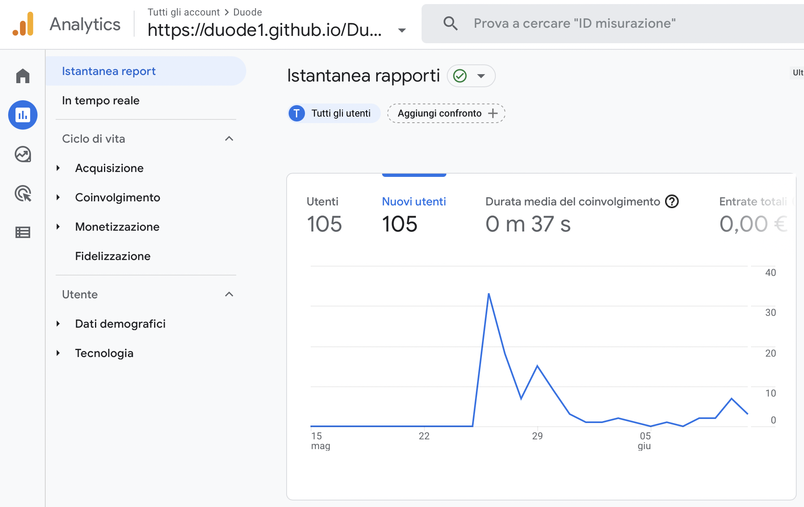

DOCUMENTAZIONE
ABSTRACT
Il "Duode" è già attivo su Instagram e su YouTube, perciò, in mancanza di un sito ho proposto loro di realizzarne uno. Il sito mira a far conoscere questo gruppo a chiunque piaccia ascoltare il cantautorato italiano o sia interessato ad avere le loro performance ad un proprio evento, di qualsiasi genere. Contiene tutte le informazioni principali: descrizione del gruppo, video, servizi e contatti.
PROJECT MANAGEMENT PLAN
Benchmarking:
L’obiettivo che questo sito si pone è di promuovere il gruppo, contenendo tutte le informazioni necessarie e funzionali a coloro i quali sono interessati ad ingaggiarla (target primario) o semplicemente a conoscerla meglio. Dunque, gli obiettivi che mi sono posta per la realizzazione del progetto sono: semplicità dei contenuti e della grafica; chiara rappresentazione della identity della band; una call to action mirata volta a mettersi in contatto con la band.
Nella fase precedente alla creazione del sito ho svolto una ricerca su altri siti da cui prendere ispirazione.
• Art Musica Eventi – contenuti diversi ma struttura simile:
La quantità di contenuti inseriti è adatta ad una soluzione one page. L’utente ha facilità ad orientarsi ed ha a disposizione tutte le informazioni principali in un’unica pagina, avendo sempre sott’occhio la barra di navigazione. Per questo motivo ho optato anch’io per questa struttura.
• Iza&Sara – stesso target:
Il sito indica un percorso all’utente da cui ho voluto prendere ispirazione: l’immagine full screen iniziale, seguita dalla descrizione del gruppo, prosegue con la possibilità di ascoltare la loro musica ed infine i contatti. In questo sito è presente anche la programmazione delle live che in futuro mi piacerebbe aggiungere.
Struttura e Layout:
Architettura del sito
Wireframe
Look and Feel:
Fonts:
• Per l’intero contenuto su html ho utilizzato il font Oswald, selezionato dal catalogo di Google Fonts.
• Per i nomi dei servizi ho utilizzato il font Lato, tramite Canva.
• Per i nomi dei membri ho utilizzato il font Oregano, tramite Canva.
Colori:
• “White” per lo sfondo della barra di navigazione, per la gran parte dei contenuti scritti e per le icone “Servizi”.
• “Black” per lo sfondo dei video e lo sfondo dei contatti.
• “#632534” per i restanti sfondi e per i contenuti della barra di navigazione.
Immagini:
• Il logo e tutte le fotografie inserite mi sono state mandate direttamente dai componenti del gruppo. Le foto anteprima dei video sono screenshot derivanti dai video. I disegni raffiguranti i membri della band sono stati realizzati da Damiano, uno dei membri del gruppo.
Video:
• I video sono stati inseriti dal canale YouTube del Duode.
Linguaggi e strumenti:
I linguaggi web utilizzati sono HTML e CSS.
Gli strumenti utilizzati sono: SublimeText versione 3.2.2 come text editor; Bootstrap per i comandi “navbar", “carousel” e per i bottoni; Google Fonts per il font; Font Awesome, Canva e Aakashweb per le icone; Google Analytics per le visualizzazioni. Per la modifica delle immagini (foto, disegni, grafiche e icone) ho utilizzato Canva e per la rimozione degli sfondi Removebg.
COMMUNICATION STRATEGY
Ho scelto di realizzare un sito che, sia a livello grafico sia di contenuto testuale, rispecchiasse lo stile e l’identity del gruppo. La grafica è semplice, coerente e intuitiva; ho inserito elementi interattivi puramente estetici; ho selezionato fotografie, immagini e disegni fornitemi direttamente dal gruppo. Le descrizioni del gruppo e dei membri fanno emergere sia la preparazione accademica dei componenti, sia la loro natura da buskers (evidente anche nelle immagini), aggiungendo qualche elemento ironico che ben li rappresenta.
Il valore aggiunto del sito è la facilità nell’orientarsi, dando la possibilità all’utente di conoscere il Duode in maniera più superficiale e rapida (tutti i contenuti principali sono nella home page) ma anche, all’occorrenza, di approfondire (sezione “scopri di più”).
Gli elementi mancanti - presenti in altri siti - sono: le recensioni da parte del pubblico o di persone che hanno ingaggiato il gruppo in passato e un calendario con gli eventi live del gruppo. Inoltre, il gruppo nasce come un duo ma negli ultimi tempi si è agiunto un componente quindi sarà necessario cambiare logo. Trattandosi di un progetto attualmente in evoluzione continuerò ad aggiornare il sito per colmare le mancanze.
Il target utente si rivolge a persone interessate a contattare la band per eventi di qualsiasi tipo oppure a chiunque apprezzi il cantautorato italiano. Dunque, in questo caso la fascia d’età è molto apia, perciò ho scelto un’estetica ed un linguaggio che possa essere apprezzato (il più possibile) da qualsiasi generazione.
PROMOZIONE
Intendo promuovere il sito tramite il profilo Instagram @duode__ e quello mio personale.
Obiettivi: 20 like al post sul profilo Instagram @duode__; 50 visite al sito.
VALUTAZIONE DEI RISULTATI
